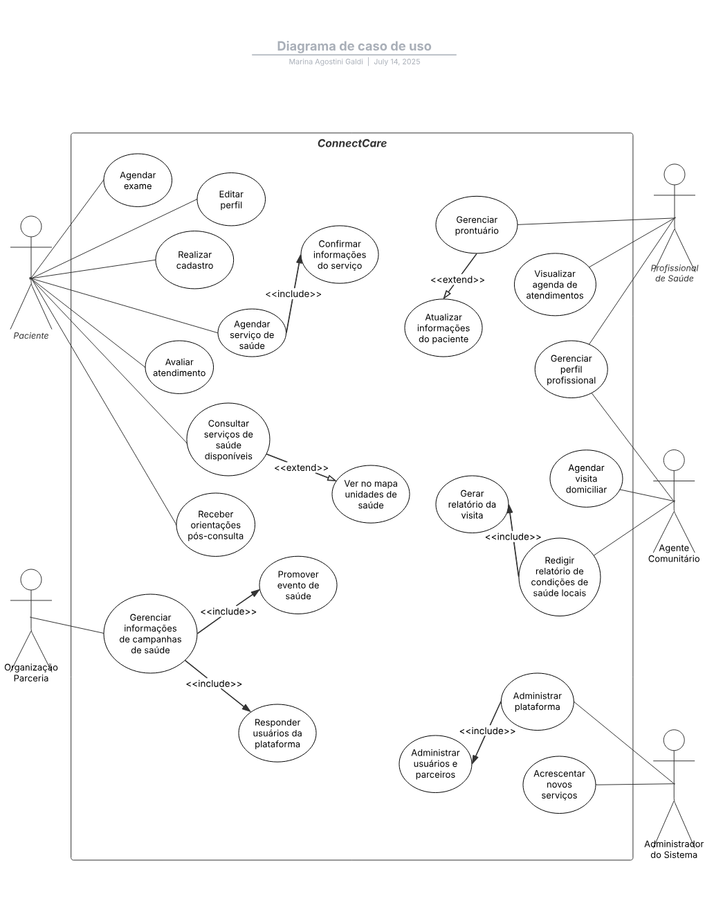

Casos de Uso
O caso de uso escolhido pela nossa equipe foi o ConnectCare. Seguem o documento com as informações do caso.
Clique aqui para visualizar o documento
Diagrama

Especificações de Casos de Uso
Visualizar Agenda de Atendimentos
Descrição Geral
- Nome do Caso de Uso: Visualizar agenda de atendimentos
- Breve descrição: Permite ao Profissional de Saúde acessar sua agenda de atendimentos no sistema, com visualização por dia, tipo e status. Essa função apoia o planejamento de serviços de saúde prestados à comunidade.
- Atores: Profissional de Saúde
Fluxo de Eventos
-
Fluxo Principal:
-
O Profissional acessa o sistema e realiza login com suas credenciais.
- O sistema valida as credenciais e redireciona o usuário à tela inicial.
- O Profissional seleciona “Agenda de Atendimentos” no menu principal.
- O sistema exibe a agenda atual contendo:
- Nome dos pacientes
- Horários dos atendimentos
- Tipo de serviço (consulta, exame, visita)
- Status (confirmado, pendente, cancelado)
- O Profissional pode aplicar filtros por data, tipo ou status.
- O sistema atualiza a agenda conforme os filtros.
- O Profissional pode acionar “Exportar Agenda” (ver ponto de extensão).
-
O caso de uso termina quando o Profissional retorna ao menu ou encerra a sessão.
-
Fluxos Alternativos:
FA01 – Agenda Vazia
- Origem: Passo 4
- Condição: Nenhum atendimento encontrado para a data selecionada
- Ação:
- O sistema exibe: “Nenhum atendimento agendado para este período.”
- Mantém filtros ativos
-
Retorna ao passo 5 do fluxo principal
-
Fluxos de Exceção:
FE01 – Falha na comunicação com o servidor
- Origem: Passo 4
- Condição: Falha ao carregar a agenda
- Ação:
- O sistema exibe: “Não foi possível acessar a agenda. Verifique sua conexão ou tente novamente mais tarde.”
-
Permanece na tela com botão de recarregar
-
Requisitos Especiais:
- RE01: A agenda deve carregar em no máximo 3 segundos.
- RE02: Deve funcionar em dispositivos de baixa performance.
- RE03: Deve funcionar offline com cache local.
- RE04: Interface responsiva e acessível para toque e leitura.
-
Regras de Negócio:
- RN01: A agenda exibida deve pertencer exclusivamente ao profissional autenticado.
- RN02: Todos os acessos à funcionalidade devem ser registrados para auditoria.
-
Pré-condições:
- O usuário deve estar autenticado com sucesso.
- Deve existir uma agenda associada ao perfil, mesmo que sem atendimentos.
-
Pós-condições
- A agenda foi carregada com sucesso, ou uma tentativa foi registrada no log do sistema.
Ponto de Extensão
-
Exportar Agenda em PDF:
- Local: Após o passo 6 do fluxo principal
- Descrição: O profissional pode clicar em “Exportar Agenda” para gerar um arquivo PDF da visualização atual.
Agendar Exame
Descrição Geral
- Nome do Caso de Uso: Agendar Exame
- Breve descrição: Permite ao paciente agendar um exame por meio do sistema ConnectCare, selecionando especialidade, turno e possibilidade de atendimento.
- Atores: Paciente
Fluxo de Eventos
-
Fluxo Principal:
-
O paciente seleciona a opção “Agendar exame”.
- O sistema recupera a localização do paciente.
- O paciente seleciona a especialidade desejada.
- O paciente digita o turno de preferência.
- O sistema mostra as principais possibilidades de atendimento, em ordem decrescente de data (ver FA03).
- O paciente clica em uma possibilidade de atendimento.
- O sistema exibe uma caixa de confirmação.
- O paciente confirma o agendamento.
-
O sistema envia um e-mail de confirmação.
-
Fluxos Alternativos:
FA01 – Paciente não escolhe especialidade
- Origem: Passo 3
- Condição: O paciente não seleciona uma especialidade
- Ação:
- O sistema exibe a mensagem: “Por favor, selecione uma especialidade para continuar.”
- Retorna ao passo 3 do fluxo principal
FA02 – Paciente não escolhe turno
- Origem: Passo 4
- Condição: O paciente não escolhe um turno de preferência
- Ação:
- O sistema exibe a mensagem: “Por favor, selecione um turno para continuar.”
- Retorna ao passo 4 do fluxo principal
FA03 – Paciente não seleciona possibilidade de atendimento
- Origem: Passo 6
- Condição: O paciente não clica em nenhuma das opções de atendimento
- Ação:
- O sistema retorna à tela de opções de especialidade e turno
-
Retorna ao passo 3 do fluxo principal
-
Fluxos de Exceção:
FE01 – Falha na Recuperação da Localização
- Origem: Passo 2
- Condição: O sistema não consegue recuperar a localização do paciente
- Ação:
- O sistema exibe a mensagem: “Não foi possível recuperar sua localização automaticamente.”
- Solicita que o paciente insira a localização manualmente
- O paciente insere a localização
- Retorna ao passo 3 do fluxo principal
FE02 – Falha ao Exibir Possibilidades de Atendimento
- Origem: Passo 5
- Condição: O sistema falha ao carregar as possibilidades de atendimento
- Ação:
- O sistema exibe: “Erro ao carregar opções de atendimento. Tente novamente mais tarde.”
- O sistema tenta recarregar automaticamente
- Caso a falha persista, sugere contato com o suporte
-
Encaminha o paciente ao menu inicial
-
Requisitos Especiais:
- RE01: O sistema deve exibir pelo menos 3 opções de atendimento ordenadas por data.
- RE02: A confirmação por e-mail deve ocorrer em até 60 segundos após o agendamento.
- RE03: O sistema deve funcionar em dispositivos móveis com internet instável.
- RE04: O tempo máximo de resposta para carregamento das opções de atendimento deve ser de 4 segundos.
-
Regras de Negócio:
- RN01: O paciente só pode agendar exames para especialidades disponíveis na sua região.
- RN02: Não é permitido mais de um agendamento por especialidade por dia.
- RN03: Todos os agendamentos devem ser associados ao CPF do paciente autenticado.
- RN04: O e-mail de confirmação deve conter a data, horário e local do exame.
-
Pré-condições:
- O paciente deve estar autenticado no sistema.
- Devem existir especialidades e horários disponíveis para agendamento.
- O sistema deve conseguir recuperar a localização do paciente (ou permitir entrada manual).
- O sistema deve estar conectado a um servidor de e-mail funcional.
-
Pós-condições
- O exame foi agendado com sucesso e a confirmação foi enviada por e-mail.
- Se o agendamento não foi concluído, nenhuma alteração foi registrada.
Ponto de Extensão
- Enviar notificações via WhatsApp: Após o envio do e-mail, o paciente pode ativar o envio de lembrete via WhatsApp com os dados do agendamento.
Gerenciar Perfil Profissional
Descrição Geral
- Nome do Caso de Uso: Gerenciar Perfil Profissional
- Breve descrição: Permite que o Profissional de Saúde mantenha e atualize suas informações dentro do sistema ConnectCare, incluindo qualificações, horários e dados pessoais, visando garantir informações atualizadas e acessíveis para os pacientes.
- Atores: Profissional de Saúde
Fluxo de Eventos
-
Fluxo Principal:
-
O Profissional de Saúde seleciona a opção “Gerenciar perfil profissional”.
- O sistema exibe a interface com as seguintes opções:
- Editar informações pessoais
- Gerenciar qualificações e especialidades (ver FA01)
- Gerenciar horários de disponibilidade/agenda (ver FA02)
- Visualizar perfil (ver FA03)
- Sair sem salvar (ver FA04)
- O Profissional seleciona “Editar informações pessoais”.
- O sistema exibe o formulário preenchido com os dados atuais.
- O Profissional edita os dados desejados.
- O Profissional solicita a gravação das alterações.
- O sistema valida os dados preenchidos (ver FE01).
- O sistema atualiza os dados no banco e exibe mensagem de sucesso.
-
O caso de uso é encerrado.
-
Fluxos Alternativos:
FA01 – Gerenciar Qualificações e Especialidades
- Origem: Passo 2
- Ação:
- O sistema exibe a seção com diplomas e certificações.
- O Profissional pode adicionar, editar ou remover qualificações.
- O sistema valida os dados (ver FE01).
- O sistema atualiza o perfil e exibe mensagem de sucesso.
- Encerramento do caso de uso.
FA02 – Gerenciar Horários de Disponibilidade/Agenda
- Origem: Passo 2
- Ação:
- O sistema exibe a disponibilidade atual do profissional.
- O Profissional pode adicionar, editar ou remover blocos de horário.
- O sistema valida os dados (ver FE01).
- O sistema atualiza a agenda e confirma a alteração.
- Encerramento do caso de uso.
FA03 – Visualizar Perfil
- Origem: Passo 2
- Ação:
- O sistema exibe o perfil em modo somente leitura.
- O Profissional revisa os dados e pode retornar ao menu ou sair.
- Encerramento do caso de uso.
FA04 – Sair Sem Salvar Alterações
- Origem: Passo 5 ou FA01.3 ou FA02.3
-
Ação:
- O sistema detecta alterações não salvas.
- Pergunta se deseja descartá-las.
- O Profissional confirma a saída.
- O sistema descarta mudanças e retorna ao menu inicial.
- Encerramento do caso de uso.
-
Fluxos de Exceção:
FE01 – Validação de Informações
- Origem: Passos 7, FA01.3, FA02.3
- Condição: Dados inválidos ou ausentes.
-
Ação:
- O sistema exibe mensagem com erro detalhado.
- Retorna ao passo em que o erro ocorreu.
- Permite correção e continuação do caso de uso.
-
Requisitos Especiais:
- Nenhum requisito especial informado para esta funcionalidade.
-
Regras de Negócio:
- RN01: Nome completo é obrigatório.
- RN02: E-mail deve estar em formato válido.
- RN03: Telefones devem seguir padrão (XX) XXXXX-XXXX.
- RN04: Especialidades devem ser selecionadas de uma lista predefinida.
- RN05: Datas de disponibilidade devem ser futuras e com intervalo máximo de 1 ano.
- RN06: Horários de atendimento não podem se sobrepor e devem estar no horário comercial.
-
Pré-condições:
- O profissional deve estar autenticado.
- As informações do perfil devem estar previamente cadastradas.
-
Pós-condições
- Os dados do perfil foram atualizados com sucesso, ou uma tentativa inválida foi registrada.
Ponto de Extensão
- Nenhum ponto de extensão aplicável.
Gerenciar Perfil Profissional
Descrição Geral
- Nome do Caso de Uso: Gerenciar Perfil Profissional
- Breve descrição: Permite que o Profissional de Saúde mantenha e atualize suas informações dentro do sistema ConnectCare, incluindo qualificações, horários e dados pessoais, visando garantir informações atualizadas e acessíveis para os pacientes.
- Atores: Profissional de Saúde
Fluxo de Eventos
-
Fluxo Principal:
-
O Profissional de Saúde seleciona a opção “Gerenciar perfil profissional”.
- O sistema exibe a interface com as seguintes opções:
- Editar informações pessoais
- Gerenciar qualificações e especialidades (ver FA01)
- Gerenciar horários de disponibilidade/agenda (ver FA02)
- Visualizar perfil (ver FA03)
- Sair sem salvar (ver FA04)
- O Profissional seleciona “Editar informações pessoais”.
- O sistema exibe o formulário preenchido com os dados atuais.
- O Profissional edita os dados desejados.
- O Profissional solicita a gravação das alterações.
- O sistema valida os dados preenchidos (ver FE01).
- O sistema atualiza os dados no banco e exibe mensagem de sucesso.
-
O caso de uso é encerrado.
-
Fluxos Alternativos:
FA01 – Gerenciar Qualificações e Especialidades
- Origem: Passo 2
- Ação:
- O sistema exibe a seção com diplomas e certificações.
- O Profissional pode adicionar, editar ou remover qualificações.
- O sistema valida os dados (ver FE01).
- O sistema atualiza o perfil e exibe mensagem de sucesso.
- Encerramento do caso de uso.
FA02 – Gerenciar Horários de Disponibilidade/Agenda
- Origem: Passo 2
- Ação:
- O sistema exibe a disponibilidade atual do profissional.
- O Profissional pode adicionar, editar ou remover blocos de horário.
- O sistema valida os dados (ver FE01).
- O sistema atualiza a agenda e confirma a alteração.
- Encerramento do caso de uso.
FA03 – Visualizar Perfil
- Origem: Passo 2
- Ação:
- O sistema exibe o perfil em modo somente leitura.
- O Profissional revisa os dados e pode retornar ao menu ou sair.
- Encerramento do caso de uso.
FA04 – Sair Sem Salvar Alterações
- Origem: Passo 5 ou FA01.3 ou FA02.3
-
Ação:
- O sistema detecta alterações não salvas.
- Pergunta se deseja descartá-las.
- O Profissional confirma a saída.
- O sistema descarta mudanças e retorna ao menu inicial.
- Encerramento do caso de uso.
-
Fluxos de Exceção:
FE01 – Validação de Informações
- Origem: Passos 7, FA01.3, FA02.3
- Condição: Dados inválidos ou ausentes.
-
Ação:
- O sistema exibe mensagem com erro detalhado.
- Retorna ao passo em que o erro ocorreu.
- Permite correção e continuação do caso de uso.
-
Requisitos Especiais:
- Nenhum requisito especial informado para esta funcionalidade.
-
Regras de Negócio:
- RN01: Nome completo é obrigatório.
- RN02: E-mail deve estar em formato válido.
- RN03: Telefones devem seguir padrão (XX) XXXXX-XXXX.
- RN04: Especialidades devem ser selecionadas de uma lista predefinida.
- RN05: Datas de disponibilidade devem ser futuras e com intervalo máximo de 1 ano.
- RN06: Horários de atendimento não podem se sobrepor e devem estar no horário comercial.
-
Pré-condições:
- O profissional deve estar autenticado.
- As informações do perfil devem estar previamente cadastradas.
-
Pós-condições
- Os dados do perfil foram atualizados com sucesso, ou uma tentativa inválida foi registrada.
Ponto de Extensão
- Nenhum ponto de extensão aplicável.
Receber Orientações Pós-Consulta
Descrição Geral
- Nome do Caso de Uso: Receber Orientações Pós-Consulta
- Breve descrição: Após a realização de uma consulta médica, o paciente acessa a plataforma ConnectCare para visualizar as orientações fornecidas pelo profissional de saúde. Essas orientações incluem instruções sobre medicamentos, cuidados recomendados, necessidade de retorno e agendamento de exames.
- Atores: Paciente
Fluxo de Eventos
-
Fluxo Principal:
-
O paciente acessa a plataforma ConnectCare com seu login.
- O sistema valida as credenciais e exibe o painel do usuário.
- O paciente seleciona a opção "Consultas Anteriores".
- O sistema apresenta a lista de consultas realizadas.
- O paciente seleciona uma consulta para visualizar detalhes.
- O sistema exibe as orientações pós-consulta registradas pelo profissional de saúde.
- O paciente lê as orientações e, se aplicável, acessa links para agendamento de exames recomendados.
-
O sistema registra a visualização das orientações.
-
Fluxos Alternativos:
FA01 – Consulta Sem Orientações
- Origem: Passo 6
- Condição: A consulta selecionada não possui orientações registradas
- Ação:
- O sistema exibe: “Nenhuma orientação disponível para esta consulta.”
- Retorna ao passo 4 do fluxo principal
FA02 – Exame Já Agendado
- Origem: Passo 7
- Condição: O exame recomendado já está agendado
- Ação:
- O sistema exibe: “Exame referente a esta consulta já foi agendado em [data/hora].”
-
Retorna ao passo 8 do fluxo principal
-
Fluxos de Exceção:
FE01 – Falha de Autenticação
- Origem: Passo 1
- Condição: Credenciais inválidas
- Ação:
- O sistema exibe: “Credenciais inválidas. Tente novamente.”
-
Retorna ao passo 1
-
Requisitos Especiais:
- RE01: As orientações devem estar disponíveis mesmo com conexão limitada, utilizando cache local quando necessário.
- RE02: O sistema deve garantir a privacidade e integridade das informações médicas exibidas.
-
Regras de Negócio:
- RN01: As orientações pós-consulta devem estar vinculadas a uma consulta previamente registrada.
- RN02: Apenas o paciente autenticado pode acessar suas próprias orientações.
- RN03: A visualização das orientações deve ser registrada para fins de auditoria.
- RN04: O agendamento de exames deve ocorrer apenas se ainda não houver registro de agendamento prévio.
-
Pré-condições:
- O paciente deve estar logado na plataforma.
- Deve existir uma consulta previamente registrada com orientações vinculadas.
-
Pós-condições
- As orientações são exibidas para o paciente.
- O paciente pode seguir um link para agendar exames solicitados.
- A leitura das orientações pode ser registrada no sistema.
Ponto de Extensão
- Avaliar Atendimento:
- Local: Após o passo 8
- Descrição: O paciente pode avaliar a qualidade do atendimento e das orientações recebidas.
Gerenciar Usuários e Parceiros
Descrição Geral
- Nome do Caso de Uso: Gerenciar Usuários e Parceiros
- Breve descrição: Permite que o Administrador do Sistema gerencie os usuários da plataforma (pacientes, profissionais de saúde, agentes comunitários) e as organizações parceiras (ONGs, hospitais, instituições governamentais). As ações incluem adicionar, editar, remover e visualizar registros, garantindo controle, integridade e atualização contínua da base de dados.
- Atores: Administrador do Sistema
Fluxo de Eventos
-
Fluxo Principal:
-
O Administrador do Sistema acessa a funcionalidade de gerenciamento.
- O sistema exibe as opções:
- Gerenciar usuários
- Gerenciar parceiros
- Visualizar detalhes de usuário/parceiro
- Sair
- O Administrador seleciona "Gerenciar usuários".
- O sistema exibe a lista de usuários cadastrados.
- O Administrador seleciona um usuário existente ou opta por adicionar um novo.
- O sistema exibe o formulário com os dados atuais (edição) ou em branco (criação).
- O Administrador preenche/edita as informações e solicita gravação.
- O sistema valida os dados inseridos [FE01].
- O sistema atualiza ou cria o registro.
- O sistema exibe mensagem de sucesso.
-
O caso de uso é encerrado.
-
Fluxos Alternativos:
FA01 – Gerenciar Usuários
- Origem: Passo 2
- O sistema exibe ações: adicionar, editar ou remover.
- Se adicionar/editar:
- Exibe formulário.
- Após preenchimento, valida [FE01] e salva.
- Se remover:
- Solicita confirmação.
- Após confirmação, remove e exibe mensagem.
- Caso de uso é encerrado.
FA02 – Gerenciar Parceiros
- Origem: Passo 2
- O sistema exibe ações para gerenciar parceiros:
- Adicionar, editar, remover.
- Funciona igual a FA01 com foco em organizações parceiras.
- Validações seguem [FE01].
- Caso de uso é encerrado.
FA03 – Visualizar Detalhes de Usuário/Parceiro
- Origem: Passo 2
- O sistema exibe lista completa.
- Administrador seleciona um item.
- Sistema exibe informações em modo somente leitura.
- Administrador retorna ao menu ou sai.
- Caso de uso é encerrado.
FA04 – Sair Sem Salvar Alterações
- Origem: Passo 6 ou qualquer ponto com formulário aberto
- O sistema detecta alterações não salvas.
- Solicita confirmação para descartá-las.
- Administrador confirma.
- Alterações são descartadas.
- Retorna ao menu inicial.
-
Caso de uso é encerrado.
-
Fluxos de Exceção:
FE01 – Validação de Informações
- Origem: Passos 8 (fluxo principal), FA01.5 e FA02.5
- O sistema identifica dados inválidos ou ausentes.
- Exibe mensagem explicando o erro (ex: e-mail inválido).
- Retorna ao formulário correspondente para correção.
-
Caso de uso continua após ajuste.
-
Regras de Negócio:
RN01 – Validação de Informações de Usuário/Parceiro
| Campo | Validação |
|---|---|
| Nome Completo (Usuário) | Texto obrigatório |
| E-mail (Usuário/Parceiro) | Formato válido, obrigatório, e único |
| Telefone de Contato | Formato (XX) XXXXX-XXXX, obrigatório |
| Tipo de Usuário | Seleção obrigatória (Paciente, Profissional, Agente) |
| Nome da Organização | Texto obrigatório, único |
| Tipo de Parceria | Seleção obrigatória (ONG, Hospital, Governo) |
-
Pré-condições:
-
O Administrador do Sistema deve estar autenticado na aplicação.
-
Pós-condições
-
As informações de usuários e/ou parceiros são atualizadas, criadas ou removidas com sucesso.
-
Mensagens de confirmação são exibidas ao final das ações.
-
Requisitos Especiais:
-
Nenhum requisito especial identificado.
Pontos de Extensão
- Não há pontos de extensão definidos para este caso de uso.
Agendar Visita Domiciliar
Descrição Geral
- Nome do Caso de Uso: Agendar Visita Domiciliar
- Breve descrição: Permite que o Agente Comunitário de Saúde ou Profissional de Saúde agende uma visita domiciliar para um paciente registrado, especificando data, horário, local e objetivo da visita. A funcionalidade visa apoiar o acompanhamento de pacientes com dificuldade de locomoção.
- Atores: Agente Comunitário de Saúde, Profissional de Saúde
Fluxo de Eventos
-
Fluxo Principal:
-
O ator acessa o sistema com seu login.
- Navega até a funcionalidade “Agendar Visita Domiciliar”.
- Busca o paciente pelo nome, CPF ou número do cartão SUS.
- Seleciona o paciente desejado.
- Escolhe data e horário disponíveis na agenda.
- Registra o motivo da visita domiciliar.
- Confirma os dados e finaliza o agendamento.
-
O sistema envia uma notificação para o paciente (se aplicável) e registra a visita na agenda do profissional.
-
Fluxos Alternativos:
FA01 – Paciente não cadastrado
- Origem: Passo 3
- Condição: O sistema não encontra o paciente
- Ação:
- O sistema exibe a mensagem: “Paciente não cadastrado”.
- O ator opta por abrir o módulo “Cadastrar Paciente”.
- Após o cadastro, o sistema retorna à tela de agendamento com o paciente já selecionado.
- Retorna ao passo 4 do fluxo principal.
FA02 – Horário não disponível
- Origem: Passo 5
- Condição: O horário escolhido já foi reservado
- Ação:
- O sistema exibe: “Horário indisponível”.
- Sugere horários próximos disponíveis.
- O ator escolhe um novo horário ou reorganiza a agenda.
- Retorna ao passo 5 do fluxo principal.
FA03 – Remarcação de Visita
- Origem: Solicitação externa
- Condição: O paciente solicita alteração de data ou horário
-
Ação:
- O ator acessa a lista de visitas agendadas.
- Seleciona a visita a ser remarcada.
- O sistema exibe o calendário com horários disponíveis.
- O ator seleciona nova data e horário.
- O sistema atualiza a agenda e notifica o paciente (se habilitado).
- Encerramento do caso de uso.
-
Fluxos de Exceção:
FE01 – Falha na Conexão com o Servidor
- Origem: Durante qualquer passo do agendamento
- Ação:
- O sistema exibe a mensagem: “Falha na conexão. Tente novamente.”
- Permite nova tentativa ou salva dados localmente para posterior sincronização.
- Retorna ao passo anterior.
FE02 – Conflito de Horários Detectado na Confirmação
- Origem: Passo 7
- Ação:
- O sistema detecta que o horário foi reservado por outro profissional.
- Exibe a mensagem de conflito.
- Retorna à seleção de data e horário.
- O ator escolhe novo horário.
-
Retorna ao passo 5 do fluxo principal.
-
Requisitos Especiais:
- RE01: Busca de pacientes deve permitir filtro por bairro e microárea.
- RE02: Sincronização da agenda deve ocorrer em tempo real para evitar conflitos.
- RE03: O módulo de notificação deve seguir as normas de privacidade de dados.
-
Regras de Negócio:
- RN01: Apenas pacientes cadastrados podem receber visitas.
- RN02: A visita deve ser agendada com no mínimo 24h de antecedência.
- RN03: Cada profissional pode agendar no máximo 8 visitas por dia.
- RN04: Toda visita registrada deve constar no histórico do paciente.
-
Pré-condições:
- O profissional deve estar autenticado no sistema.
- O paciente deve estar cadastrado no sistema.
- O sistema deve ter informações atualizadas sobre horários disponíveis.
- O sistema deve estar conectado ao servidor de notificação (se aplicável).
-
Pós-condições
- A visita está registrada no histórico do paciente.
- A agenda do profissional foi atualizada.
- O paciente recebeu uma notificação (se habilitado).
Pontos de Extensão
- Integração com módulo de indicadores para contabilização em relatórios mensais.
- Opção de anexar relatório da visita após a execução.